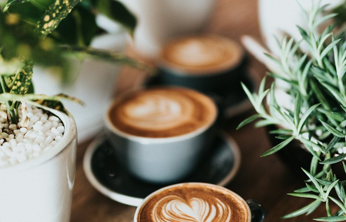

Técnica
Por qué la temperatura del agua cambia todo en el espresso
La diferencia entre 88 °C y 94 °C puede ser la línea entre una extracción brillante y un café amargo.
Una temperatura baja sub-extrae los compuestos ácidos y deja un café plano; una muy alta extrae taninos amargos. En nuestra barra trabajamos entre 92 °C y 93 °C para cafés de tueste medio y ajustamos un grado según el origen.